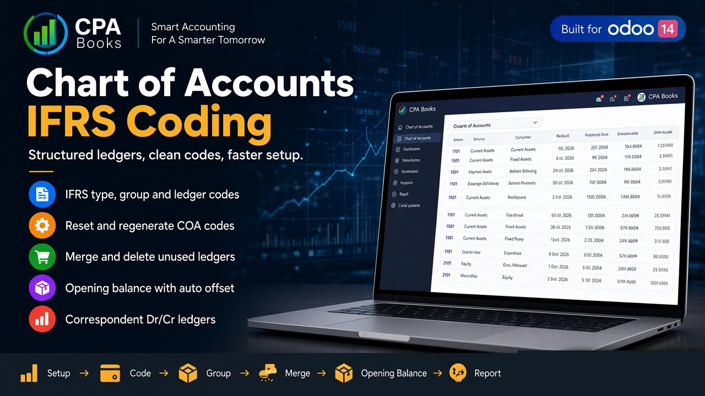
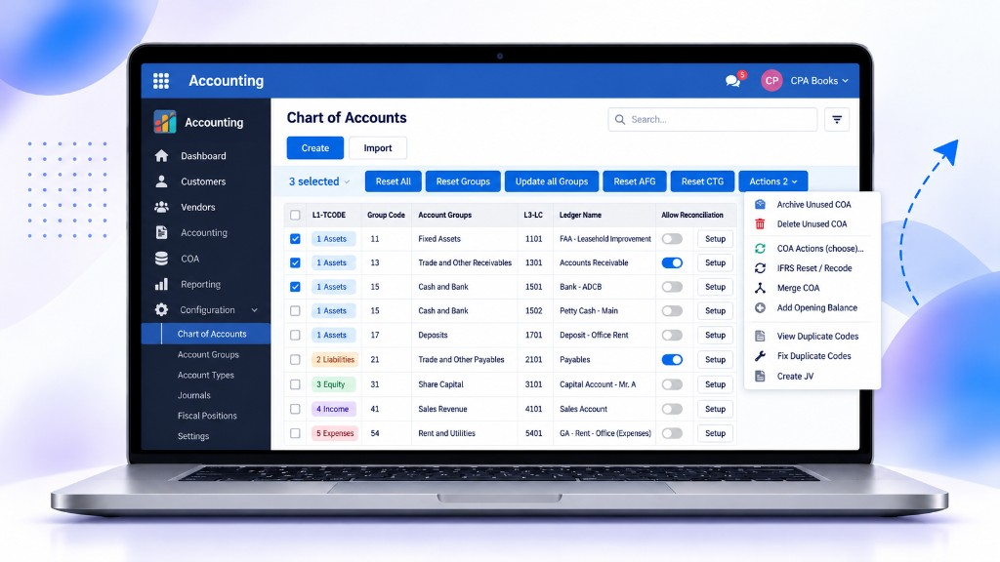
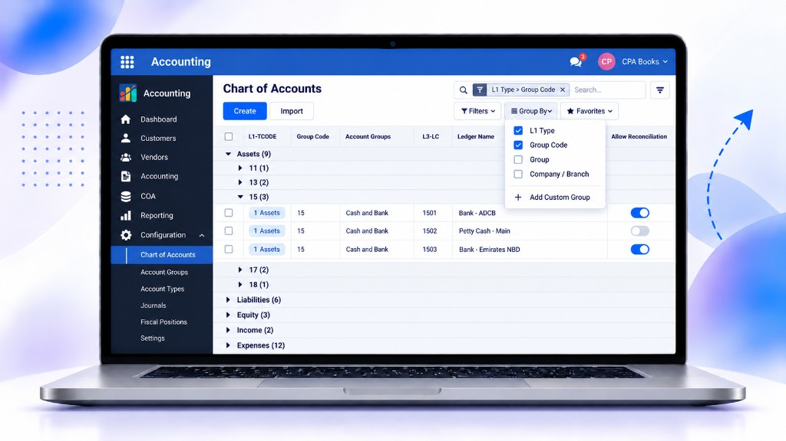
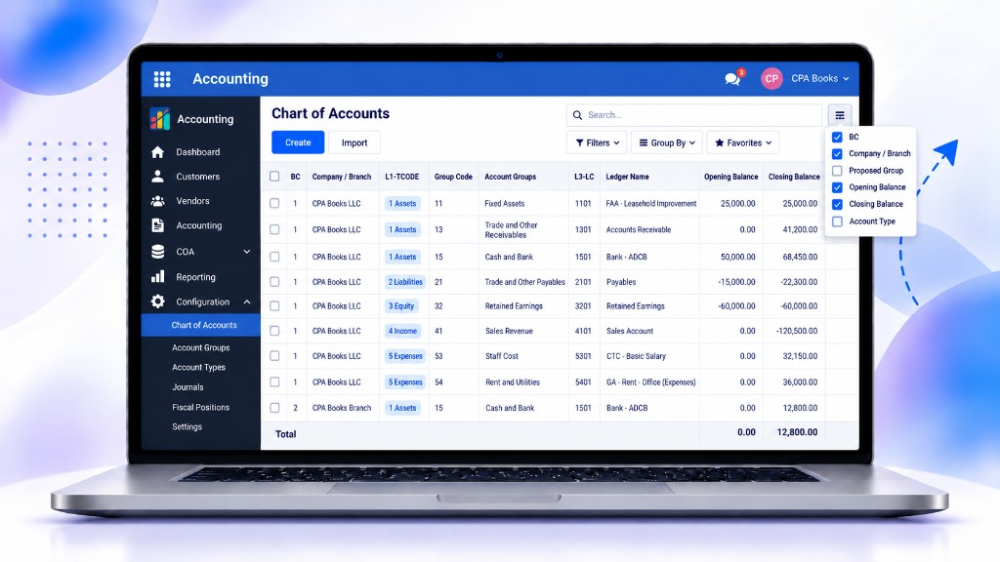
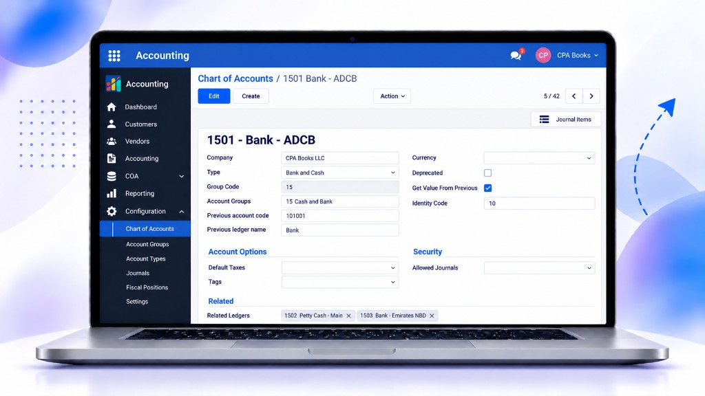
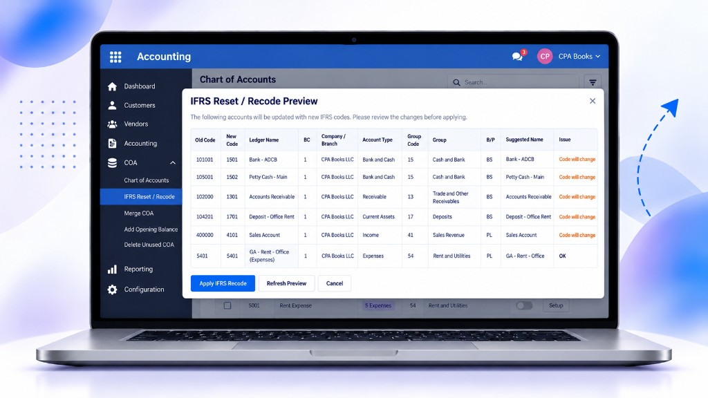
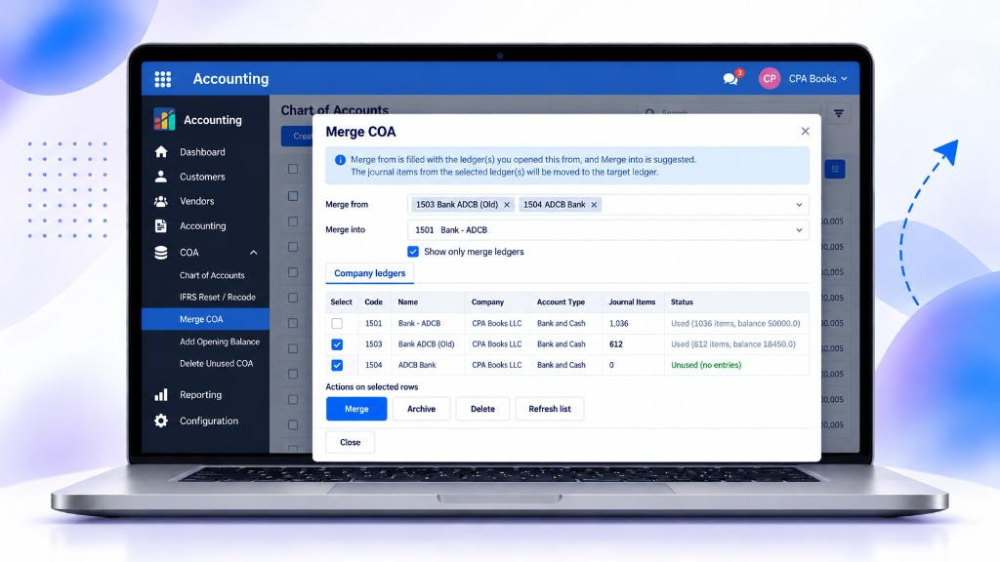
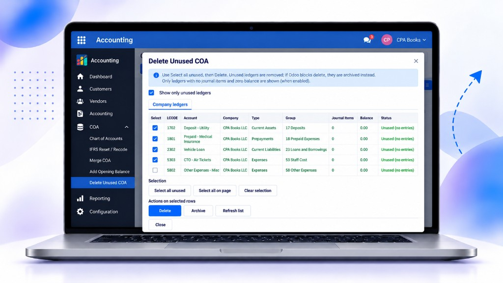
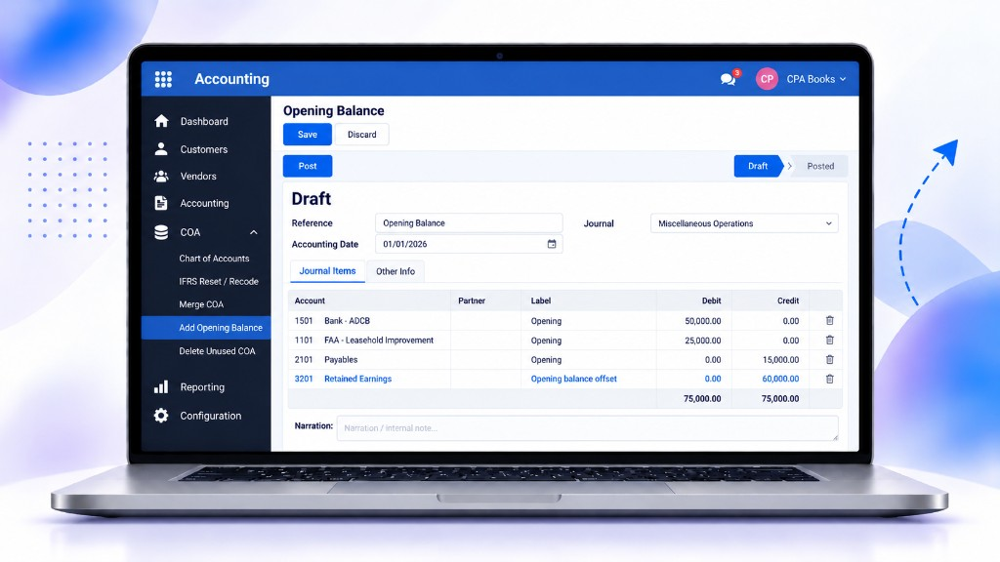

CPA Books · Odoo 14 · LGPL-3
Organize ledgers, manage account codes and prepare opening balances.

Work with account types, reporting groups and ledgers. Use automatic ledger coding and company preferences for four or six digit codes.
The module depends on standard Odoo modules: Accounting, Purchase, Products, Discuss and Web. No third-party module or extra Python package is required beyond Odoo's dependencies.
Installation initializes account defaults and groups for existing companies and permits duplicate account codes within a company. Evaluate installation, reset and merge operations on a backup copy before applying them to an existing accounting database.
The account structure supports setup and organization; it does not certify IFRS compliance.
Illustrative interface previews. Layout and available actions depend on configuration and access rights.








This release targets Odoo 14 on installations that support custom addons, including self-hosted servers and Odoo.sh. Core features use Community modules. Optional Enterprise reporting integrations require the corresponding Enterprise applications and licenses.
Inventory, Employees and Enterprise Assets integrations are optional. Do not install alongside another variant of this same chart-of-accounts module.
Include your Odoo version, steps to reproduce and the error message when requesting assistance.
info@cpabooks.org